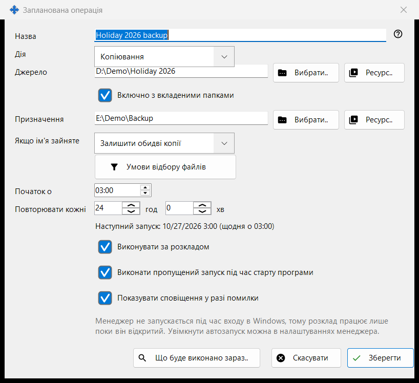
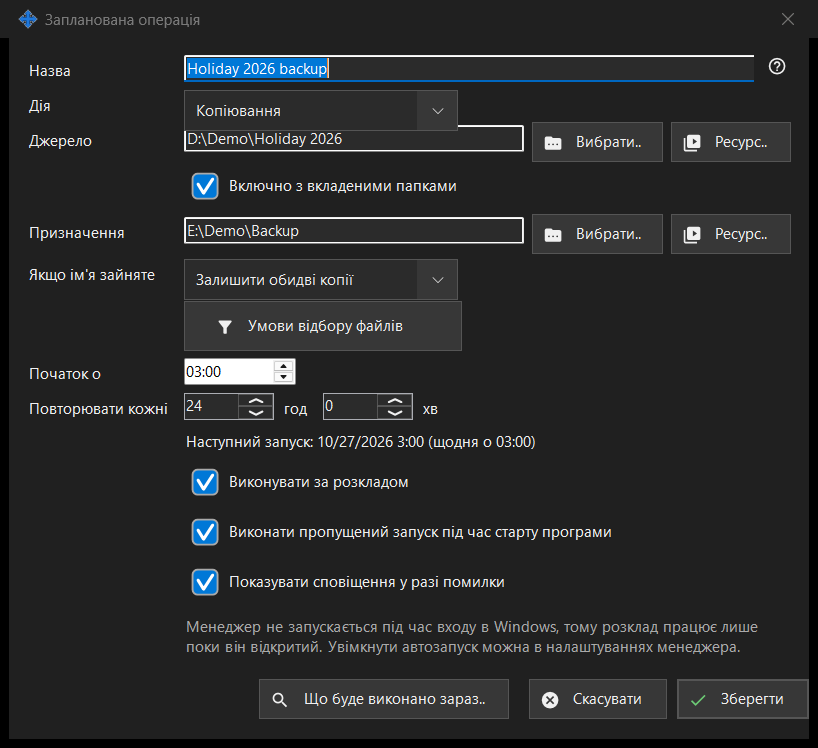

Запланована операція
Призначення
Редагує одну файлову операцію за розкладом: копіювання, переміщення, видалення або архівування файлів із джерела в призначення з повторенням за розкладом. Вікно відкривається кнопками «Створити..» і «Змінити..» на сторінці «Файлові операції за розкладом» у налаштуваннях Share Manager, а також пунктом «Запланувати операцію для цієї теки..» у меню папки переглядача, який підставляє цю папку як джерело.


Порядок дій
- Введіть Назву й виберіть Дію.
- Задайте Джерело та, для копіювання, переміщення й архівування, Призначення кнопками «Вибрати..», «Ресурс..» або «Через Google Диск».
- Для копіювання й переміщення виберіть, що робити, «Якщо ім'я зайняте».
- Відкрийте «Умови відбору файлів», щоб звузити набір файлів.
- Задайте «Початок о» та «Повторювати кожні» і залиште ввімкненим «Виконувати за розкладом».
- Перевірте «Що буде виконано зараз..» і натисніть «Зберегти».
Елементи вікна
Дія та збіг імен
Дія - Копіювання, Переміщення, Видалення або Архівування, і вікно показує лише потрібні їй рядки: у Видалення немає Призначення; «Якщо ім'я зайняте» (Пропустити, Перезаписати, Залишити обидві копії) є лише в Копіювання та Переміщення; «Видалити вихідні файли після перевірки архіву» є лише в Архівування і видаляє оригінали тільки після того, як архів прочитано назад і звірено.
Джерело й призначення
Введіть повний шлях або натисніть «Вибрати..». «Ресурс..» вибирає SFTP-сервер чи мережеву папку зі списку ресурсів переглядача; для Архівування кнопки немає, бо архів приймає лише звичайні папки та Google Диск. «Через Google Диск» з'являється, лише коли ви ввійшли в Диск або ця сторона його вже використовує. Якщо «Включно з вкладеними папками» вимкнено, обробляються лише файли самої папки-джерела. «Зберегти» відхиляє системні та програмні папки, а також призначення, що збігається з джерелом або лежить усередині нього, і пояснює, що не так.
Видалення файлів
Коли файли буде видалено (Видалення або Архівування з видаленням оригіналів), рядок «Видалення: ..» повідомляє, куди вони підуть: до Кошика або безповоротно із зазначенням причини, наприклад на мережевому чи змінному диску немає Кошика. У такої операції Enter не зберігає; натисніть «Зберегти» свідомо. Запуск за розкладом ніколи нічого не питає й записує, куди пішли видалені файли.
Умови відбору файлів
Панель відкривається сама, якщо умови відрізняються від стандартних. Типи файлів: Усі файли, Зображення, Аудіо, Відео, Документи («Усі файли» вимикає інші чотири). Змінено: За весь час, Нові з минулого запуску, За останню годину, За останню добу. «Маска імені» та «Виключити за маскою» приймають кілька масок через «;», наприклад *.jpg;IMG_??.png; порівнюється ім'я файлу. «Старіші за» і «Новіші за» задаються в днях і годинах, «Розмір більший за» та «Розмір менший за» - у МБ. «Включати приховані та системні файли» за замовчуванням вимкнено.
Розклад
«Початок о» задає час доби, «Повторювати кожні» - інтервал у годинах і хвилинах; ціле число діб повторюється в той самий час. Рядок під ними показує «Наступний запуск: час (правило)» або «Розклад вимкнено: операція виконується лише вручну.» «Виконати пропущений запуск під час старту програми» та «Показувати сповіщення у разі помилки» - окремі параметри. Ще один рядок повідомляє, що розклад працює, лише поки запущено Share Manager, і чи запускається він під час входу в Windows; це вікно автозапуск не змінює.
Перегляд і збереження
«Що буде виконано зараз..» показує список файлів, які операція обробила б, і нічого не змінює; для запуску він не потрібен. «Зберегти» зберігає операцію або перелічує, що треба виправити. «Скасувати» відкидає правки.
Налаштування менеджера · Налаштування спільного доступу SFTP · Налаштування сервера обміну